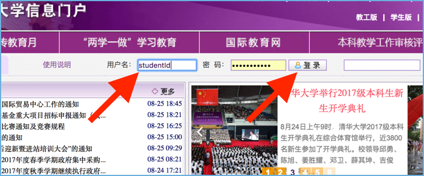
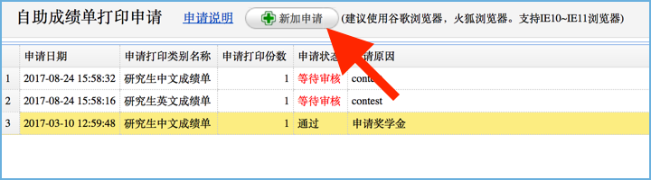
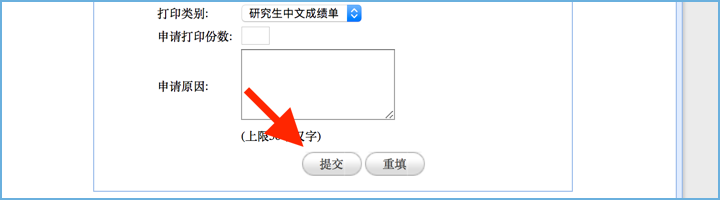
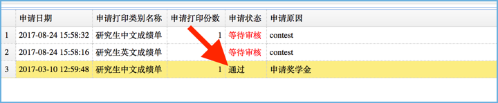
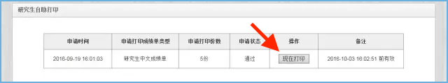

Print your transcript (graduate students)¶
To print out a notarized version of your transcript, follow the steps below.
1. Sign in to info.tsinghua¶
3. Click the 新加申请 button at the top¶

4. Select number of copies and the target language¶
Use the text area to explain why you need to print your transcript. .. image:: transcript-lang-num.png
5. Click 提交 to apply for review¶

6. Wait for approval (couple of days)¶
Your application to print’s status 申请状态 will be updated to 通过 if your application to print has been approved.
7. Go to the registrar machines at Teaching Building No.3¶
Tap 成绩单打印 (Print Transcript).
8. Tap 现在打印 to print¶
Transcripts are RMB 10 per copy
